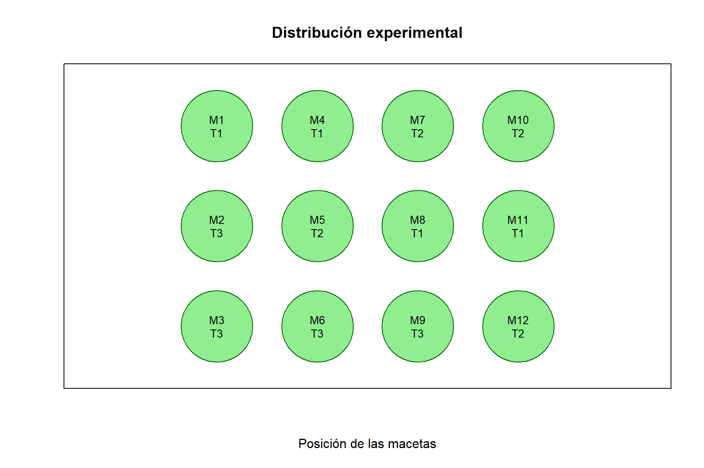

Efecto de tres frecuencias de riego sobre el crecimiento del rabanito
Author
Katerin
Propuesta de experimento
Título: Efecto de tres frecuencias de riego sobre el crecimiento de plantas de rabanito (Raphanus sativus L.).
Tipo de investigación: Experimental.
Diseño experimental: Diseño Completamente al Azar (DCA).
Lugar propuesto: Chachapoyas, Amazonas, Perú.
1. Introducción
El rabanito (Raphanus sativus L.) es una hortaliza de ciclo corto, utilizada en estudios agronómicos por su rápido crecimiento y facilidad de manejo.
El agua es un recurso fundamental para el desarrollo vegetal, ya que participa en procesos como la absorción de nutrientes, la fotosíntesis y el crecimiento celular.
La frecuencia de riego puede influir en el desarrollo de las plantas. Por ello, se propone evaluar tres frecuencias de riego sobre el crecimiento del rabanito en condiciones controladas.
2. Objetivos
Objetivo general
Evaluar el efecto de tres frecuencias de riego sobre el crecimiento de plantas de rabanito (Raphanus sativus L.).
Objetivos específicos
Evaluar la altura de las plantas bajo diferentes frecuencias de riego.
Determinar el efecto de la frecuencia de riego sobre el número de hojas.
Comparar el crecimiento de las plantas sometidas a los tres tratamientos.
3. Hipótesis
Hipótesis nula (H0):
Las tres frecuencias de riego no producen diferencias significativas en el crecimiento de las plantas de rabanito.
Hipótesis alternativa (H1):
Al menos una frecuencia de riego produce diferencias significativas en el crecimiento de las plantas de rabanito.
4. Factor en estudio
El experimento tendrá un solo factor independiente:
Factor A: Frecuencia de riego.
Se evaluarán tres niveles:
A1: Riego cada día.
A2: Riego cada 2 días.
A3: Riego cada 3 días.
Para controlar otras fuentes de variación, se utilizará el mismo tipo de suelo, volumen de maceta y cantidad de agua por aplicación.
5. Tratamientos
El experimento estará conformado por tres tratamientos.
Se empleará un Diseño Completamente al Azar (DCA), debido a que el experimento se realizará utilizando macetas bajo condiciones ambientales similares.
El experimento tendrá las siguientes características:
Factor en estudio: Frecuencia de riego.
Número de tratamientos: 3.
Número de repeticiones: 4.
Número de unidades experimentales: 12.
Unidad experimental: Una maceta con una planta de rabanito.
El número de unidades experimentales se calculará mediante:
\[
N = t \times r
\]
Donde:
\(t\) = número de tratamientos.
\(r\) = número de repeticiones.
\[
N = 3 \times 4 = 12
\]
7. Aleatorización de tratamientos
Los tratamientos serán distribuidos aleatoriamente entre las doce unidades experimentales.
Mostrar código R
set.seed(123)diseno <-data.frame(Maceta =paste0("M", 1:12),Tratamiento =sample(rep(c("T1", "T2", "T3"), each =4) ))knitr::kable( diseno,caption ="Distribución aleatoria de tratamientos")
Distribución aleatoria de tratamientos
Maceta
Tratamiento
M1
T1
M2
T3
M3
T3
M4
T1
M5
T2
M6
T3
M7
T2
M8
T1
M9
T3
M10
T2
M11
T1
M12
T2
8. Croquis experimental
El croquis representa la distribución de las doce macetas utilizadas en el experimento.
Mostrar código R
# Posiciones de las macetasx <-rep(1:4, each =3)y <-rep(3:1, times =4)# Preparar el gráficoplot(NA,xlim =c(0.5, 4.5),ylim =c(0.5, 3.5),xlab ="Posición de las macetas",ylab ="",main ="Distribución experimental",axes =FALSE,asp =1)# Dibujar macetassymbols( x, y,circles =rep(0.36, 12),inches =FALSE,bg ="lightgreen",fg ="darkgreen",add =TRUE)# Identificar tratamientostext( x, y,labels =paste0( diseno$Maceta,"\n", diseno$Tratamiento ),cex =0.85)box()

Croquis de distribución de tratamientos.
9. Metodología del experimento
Preparación de las unidades experimentales
Se utilizarán doce macetas de tamaño uniforme, llenadas con la misma cantidad y tipo de sustrato.
En cada maceta se sembrarán semillas de rabanito. Después de la emergencia, se seleccionará una planta uniforme por maceta.
Aplicación de tratamientos
Se establecerán tres frecuencias de riego: diariamente, cada dos días y cada tres días.
Se aplicará el mismo volumen de agua por evento de riego. Dicho volumen será definido antes de iniciar el experimento.
Evaluación
Se realizarán evaluaciones semanales del crecimiento de las plantas.
El experimento tendrá una duración propuesta de 30 días, ajustable según el desarrollo del cultivo.
10. Variables de evaluación
Las principales variables serán:
Altura de planta (cm): Medición desde la base del tallo hasta el punto más alto de la planta.
Número de hojas (unidad): Conteo de hojas verdaderas desarrolladas.
Diámetro de raíz (mm): Medición del diámetro de la raíz engrosada al momento de la cosecha.
Mostrar código R
variables <-data.frame(Variable =c("Altura de planta","Número de hojas","Diámetro de raíz" ),Unidad =c("cm", "unidad", "mm"),Evaluacion =c("Semanal","Semanal","Al finalizar" ))knitr::kable( variables,caption ="Variables propuestas para evaluar el crecimiento")
Variables propuestas para evaluar el crecimiento
Variable
Unidad
Evaluacion
Altura de planta
cm
Semanal
Número de hojas
unidad
Semanal
Diámetro de raíz
mm
Al finalizar
11. Modelo y análisis estadístico propuesto
El modelo estadístico correspondiente al Diseño Completamente al Azar es:
\[
Y_{ij} = \mu + T_i + \varepsilon_{ij}
\]
Donde:
\(Y_{ij}\) = valor observado de la variable respuesta.
\(\mu\) = media general.
\(T_i\) = efecto del tratamiento.
\(\varepsilon_{ij}\) = error experimental.
Una vez obtenidos los datos, se propone realizar un análisis de varianza (ANOVA) para cada variable de respuesta.
Si se encuentran diferencias significativas entre tratamientos, se realizará una prueba de comparación de medias de Tukey al 5 %, siempre que se cumplan los supuestos estadísticos correspondientes.
Nota: La presente página describe únicamente la idea y planificación del experimento. No se presentan resultados experimentales ni análisis estadísticos ejecutados.
12. Referencias bibliográficas
Gómez, K. A., & Gómez, A. A. (1984). Statistical Procedures for Agricultural Research. John Wiley & Sons.
Montgomery, D. C. (2017). Design and Analysis of Experiments (9th ed.). Wiley.
R Core Team. (2026). R: A Language and Environment for Statistical Computing. https://www.r-project.org/
Conclusión de la propuesta
El experimento propuesto permitirá estudiar el efecto de tres frecuencias de riego sobre el crecimiento del rabanito mediante un Diseño Completamente al Azar.
La planificación contempla tres tratamientos, cuatro repeticiones y doce unidades experimentales, con una distribución aleatoria.
La propuesta es sencilla y viable para desarrollar un ensayo agrícola a pequeña escala y constituye una aplicación práctica de los principios del diseño experimental.